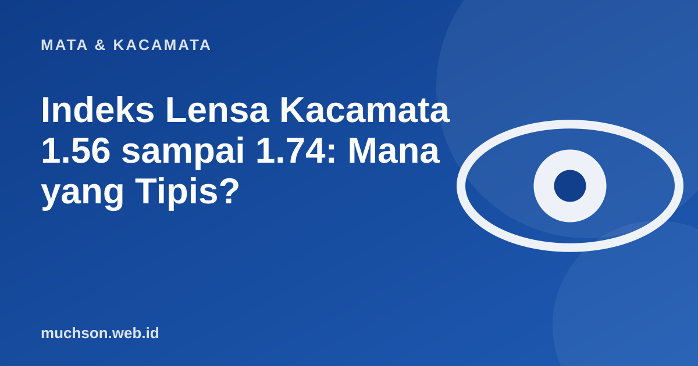

Beranda › Artikel › Mata & Kacamata
Mata & KacamataIndeks Lensa Kacamata 1.56 sampai 1.74: Mana yang Tipis?
Minus besar dengan lensa biasa membuat bagian tepi lensa tebal seperti dasar botol. Solusinya bukan hanya frame kecil, tetapi juga indeks lensa yang lebih tinggi. Kalkulator ini menunjukkan perbedaan ketebalannya untuk resep Anda.

Apa itu indeks lensa?
Indeks bias menunjukkan seberapa kuat bahan lensa membelokkan cahaya. Bahan dengan indeks tinggi membelokkan cahaya lebih kuat, sehingga untuk kekuatan yang sama lensanya bisa dibuat lebih tipis dan lebih ringan. Angka lazim di pasaran: 1.50 (standar), 1.56, 1.60, 1.67, dan 1.74. Semakin tinggi angkanya, umumnya semakin tipis dan semakin mahal.
Mana yang layak dibeli?
| Kekuatan (minus) | Indeks yang biasanya cukup | Catatan |
|---|---|---|
| Sampai sekitar 2,00 | 1.50 - 1.56 | Lensa standar sudah cukup tipis |
| 2,00 sampai 4,00 | 1.56 - 1.60 | Selisih ketebalan mulai terlihat |
| 4,00 sampai 6,00 | 1.60 - 1.67 | Cukup membantu terutama bila frame besar |
| Di atas 6,00 | 1.67 - 1.74 | Pertimbangkan frame kecil dan bulat |
Tabel ini hanya pedoman umum. Ukuran frame, bentuk, dan perbedaan angka kanan-kiri mengubah pilihan terbaik. Konsultasikan dengan optik yang bisa memotong lensa sesuai frame Anda.
Tips agar lensa tampak lebih tipis
- Pilih frame kecil hingga sedang, dan hindari frame oversize untuk minus besar.
- Pilih frame tebal atau berwarna yang menyamarkan tepi lensa.
- Pastikan pusat lensa (PD) tepat di depan pupil, karena ketidaktepatan membuat tepi satu sisi lebih tebal.
- Lapisan anti-pantul mengurangi kilau tepi lensa dan membuatnya tampak lebih bersih.